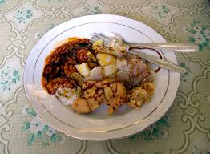

<< Daftar Resep
Kuliner Bandung - Siomay Khas Bandung
Siomay Bandung
Bahan |
Cara Membuat |

Siapa yang tidak tahu atau tidak suka siomay? Makanan yang identik dengan kota Bandung ini semula adalah salah satu menu yang terdapat dalam makanan Dim Sum dari China.
Dahulu aslinya siomay ini adalah sajian daging babi cincang yang dibungkus kulit pangsit. Dan perkembangannya agar sesuai dengan selera lidah Indonesia dan menjamin kehalalan, siomay dibuat dengan ikan tenggiri, udang, ataupun ayam.
Siomay disajikan dengan pelengkap seperti kentang, kol, pare dan tahu yang diisi siomay, otak-otak, dan telur ayam, lalu disiram dengan bumbu kacang yang kental. Agar lebih nikmat dan pedas manis, maka bisa ditambahkan saus sambal dan kecap di atasnya, plus dengan perasan jeruk limau untuk menambah sensasi segar dan asam. Hm, yummy
Bahan:
- Ikan Tenggiri 350 gram fillet (haluskan)
- Daging Ayam 250 gram ayam fillet
- 2 butir telur yang sudah dikocok
- 3 bawang putih (haluskan)
- 4 bawang merah (haluskan)
- 1sdm minyak wijen
- Daun bawang iris tipus
- 300 gram tepung tapioka
- Gula, garam dan merica bubuk secukupnya
Bahan pelengkap untuk resep siomay Bandung enak dan empuk:
- Telur rebus
- Tahu Rebus
- Kol yang gulung dan kukus
- Kentang kupas kukus
Cara membuat siomay:
- Campurkan ayam, ikan, telur dan bumbu lainnya yang sudah dihaluskan, Aduk sampai rata
- Masukkan sedikit demi sedikit tepung sambil diaduk secara perlahan
- Bentuk adonan dengan sendok sampai berbentuk hampir bulat dan kukus hingga matang sekitar 15-25 menit
- Saat mengukus siomay, bisa juga sekaligus mengukus bahan pelengkap
- spesial ini makin enak ketika dinikmati dengan sambal kacang Berikut bahan dan cara membuat sambal kacang
Bahan:
- 250 gram kacang tanah goreng, haluskan
- 3 sdm gula merah yang sudah dihaluskan
- 2 sdt garam
- 2 lembar daun jeruk
- Kecap manis, air dan air perasan jeruk limau secukupnya
Bumbu halus:
- 7 buah cabai merah keriting
- 4 buah cabai rawit merah
- 5 buah bawang merah
- 2 siung bawang putih
Cara membuat bumbu kacang:
- Panaskan minyak secukupnya. Tumis bumbu halus dan campurkan daun jeruk masak hingga harum dan matang
- Tambahkan air sesuai selera sampai mencapai kekentalan yang diinginkan dan kacang mengeluarkan minyak
- Kucurkan air jeruk limau dan aduk rata